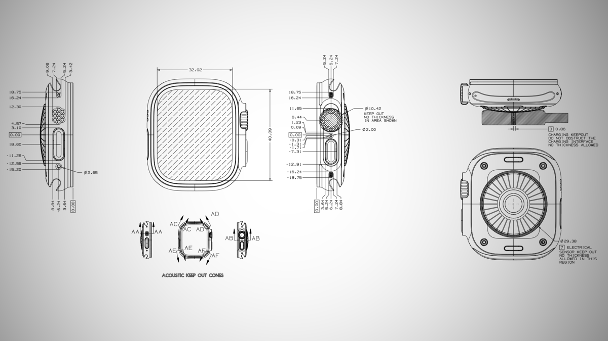

Apple опубликовала портал Dimensional Drawings — «мерные чертёжи» собственных устройств: iPhone от 12-й модели до свежего iPhone 18 Pro, iPad (вплоть до 8-го поколения), Apple Watch с 6-го поколения, Vision Pro первого поколения, все AirPods, MacBook Neo, Apple TV 4K третьего поколения и пульты Siri Remote. Всё лежит в виде PDF на developer.apple.com, скачивается напрямую — без входа в аккаунт и без подписки на Apple Developer Program.
Главная аудитория чертежей — производители чехлов, док-станций и прочего периферийного оборудования: документация задумана именно для них (за использование данных в коммерческих продуктах придётся принять лицензионные условия Apple). На чертежах устройство показано со всех ракурсов с размерами в метрической системе. Заодно нашлись и любопытные детали: например, помечены зоны Vision Pro, которые чехол перекрывать нельзя — иначе перегреется, а AirPods 5 по габаритам совместимы с AirPods 4.
Энтузиасты давно используют эти материалы не по назначению: из них собирают модели устройств в CAD, печатают на 3D-принтере и делают минималистичные обои — Apple, судя по всему, не против, периодически обновляя коллекцию под новые модели. В сентябре публикация уже попала в топ Hacker News, а теперь Apple добавила в неё новейший iPhone и MacBook Neo и открыла доступ без авторизации.
Российских аналогов подобного открытого чертежного портала у наших производителей электроники по открытым официальным данным нет.